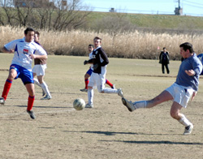
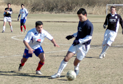

|
Misato, Sun 5th February. France FC's pre-game strip-changing chicanery left Sala looking like a bunch of vagrants and playing like they'd spent the night drinking aftershave under a railway bridge, as they ran out 3v1 winners on Sunday at Misato.
France turned up in a shiny new white strip, as opposed to their regular blue, quite without warning, leaving the two teams to jan-ken for the right to wear white. Typically, Sala lost, and were forced to take to the field wearing a motley assortment of t-shirts and jackets.
Sala shrugged off this affliction though, to start the more brightly of the two teams, and after only a couple of minutes a scramble in the French box saw several shots blocked on the line by French legs.
It was of course a false flag for Sala, as they managed to orchestrate their own downfall soon afterwards.
A tussle in the Sala box between Guido and one of the French's new Japanese strikers, saw the Sala captain land on the ball and then instinctively hold onto it with his arm as it squirmed away.
There was no chance for Sid from the resulting penalty, and France went a goal up to cheers of “Allez le blanc” from the touchline. Which, to be honest, doesn't quite have the same ring to it as the original. 0v1.

Merely 10 minutes later, Charles's trick-pony dummy set up a nifty French attack, which saw their striker go clear and beat Sid from a tight angle, clinically putting it in the corner. 2v0.
A very familiar feeling gnawed deep at the unconscious of many a Sala veteran. That being that, Sala have, incredibly, given up two early goals to France in their last five meetings.
Shortly after that, an unfortunate pass back by a French defender gave Sala an indirect free kick in the box. Toby lined it up, and was very unlucky to see his shot cannon off the crossbar. Lenny was in a tricky mood and conjured up several chances from the left wing, whilst Giles did likewise on the right.
Giles also had a chance to get Sala back in it, but shot just wide from the edge of the box.
Sala's best chance came when, following a mis-hit clearance by a French defender, Brookey rifled a rising shot from about the penalty spot that looked unstoppable… Only for the French goalkeeper to pull off a miraculous save, diving full length to his right and just getting a fist on it, to send it wide.
Despite the heavy pressure, Sala ended the half feeling lucky to be only two down.
Another lightning attack from France put a midfielder through on goal. His angled drive cracked off the inside of the post and was well cleared before the vultures arrived.
France also had a couple of tremendous scraps in the Sala penalty area with countless shots being blocked and charged down, credit for which must go to Clarkey, Yusuke and Doug.
The second half saw a host of fresh faces for Sala, and a renewed vigour, as they fairly dominated possession. Jeff and Steven brought a bit more bite to the left side, whilst Jason replaced Brookey in the middle at about the halfway stage.
The arrival of Andres on the right and Toby's tireless running up top, kept the French back line busy for the full forty minutes, but despite nice combination play between Dhugal, Brookey and Brian around the box, Sala couldn't find the cutting edge.

The hammer blow came after about sixty-five minutes, when Sala were caught short at the back again, Clarkey was left hung out to dry as two attackers bore down on him and passed the ball left to right, before one of them fired past Sid with another quality finish. 3v0.
Sala, knowing the game was almost up, piled on the pressure again, and though there's no need to go into details, it's needless to say that there was an abundance of gift horses and no shortage of people looking in their mouths.
The only highlight, on a bleak day when the wind could have frozen a brass monkey, was Andres' cracking goal, right at the death. Struck with power from outside the box, it fizzed effortlessly into the top left corner of the net, to take the impressive Colombian to two goals from two midfield substitute appearances, a statistic that most Sala strikers should be eyeing enviously.
Overall, a pretty poor performance, but not totally devoid of hope or instruction. As the bared claws of winter sink deeper into the fat of the land, Sala have, by hook or crook, picked up 6 points from a possible 9 in 2006 and really musn't grumble. It would be nice to beat France though… just once…
It's enough to drive you to drink.
Report - R.C.
France FC's official Tailor for the 2005/06 TML season.
|